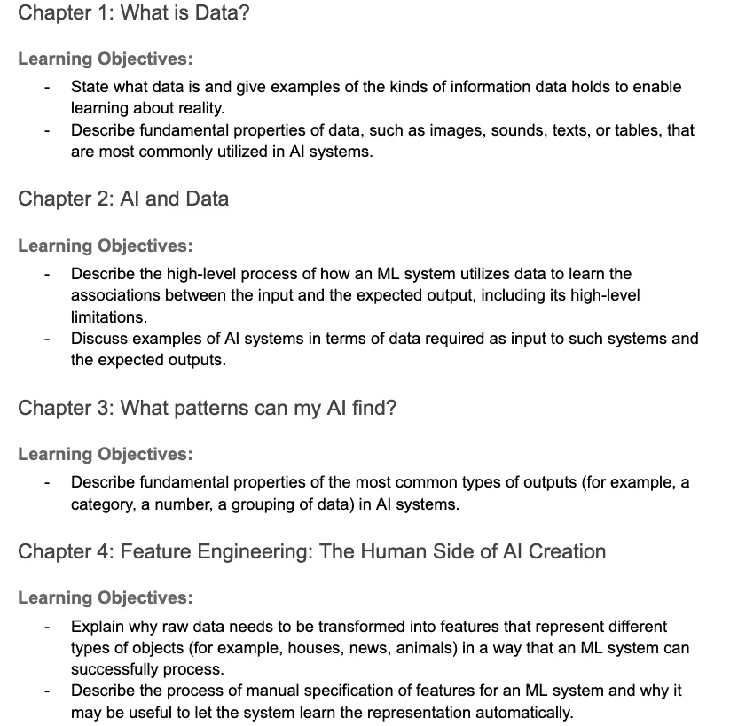
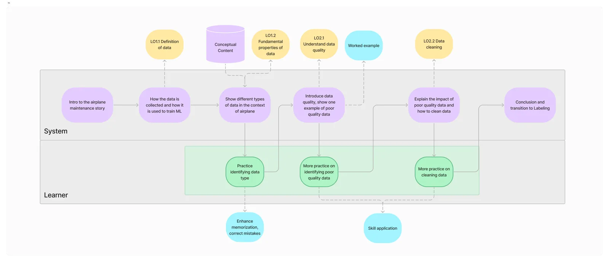
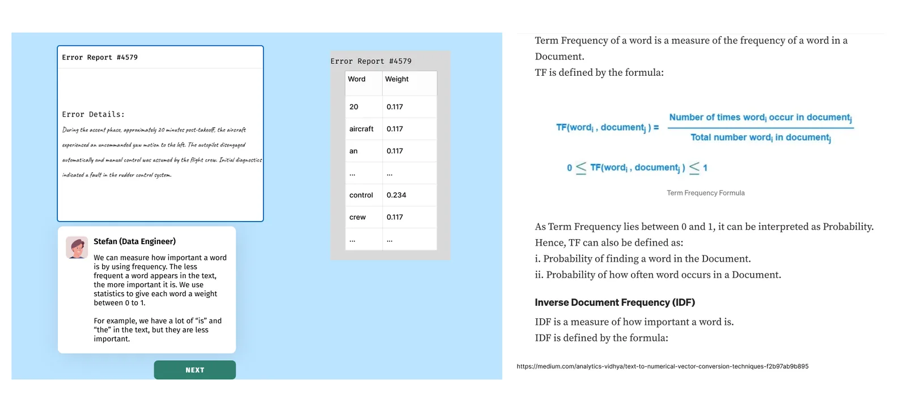
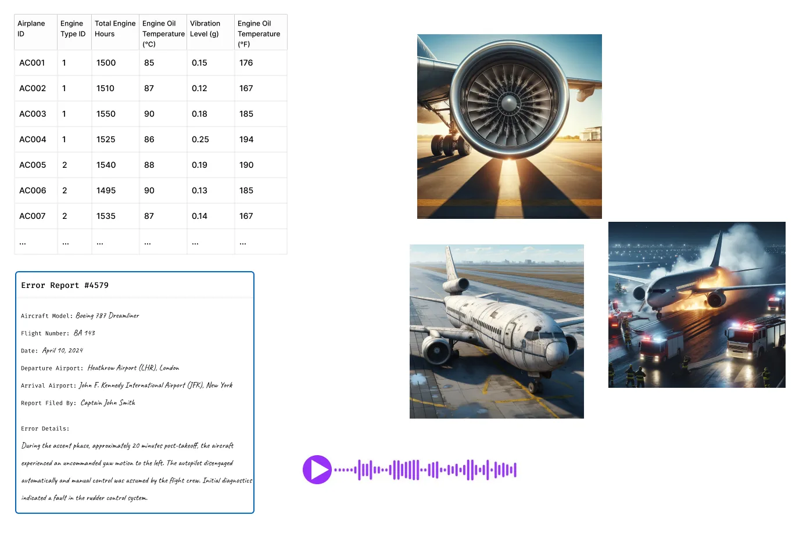

Project Overview
This project was for the US Navy and conducted by CMU's Technology for Effective and Efficient Learning (TEEL) Lab.
My role was Learning Engineer, where I collaborated closely with SMEs and designed over 100+ screens for 4 tasks, incorporating content, activities, and visuals within 2 months.
Problem
The US Navy wants current soldiers to have a basic understanding of AI/ML to work with specialists during their service. However, it's challenging to teach such topics due to a lack of expertise in teaching and motivation.
Solution
- Developed interactive learning content tailored to be accessible for learners with only high school knowledge, using easy-to-understand language.
- Incorporated motivational tasks to enhance engagement, including interactive scenarios and problem-solving exercises that reflect real-world applications.
- Highlighted practical Navy applications of AI/ML to help learners see the relevance and transferability of their skills, enhancing both understanding and motivation.
- Designed the course to be visually engaging and included real-world examples to aid in comprehension and stimulate interest.
Tools
- Sail()
- Figma
Team
- 2 Instructional Designers (Me)
- 1 UX designer
- 2 Developers
- 1 Project Manager
- 2 Subject Matter Experts
My Role
- Instructional Design
- UX Design
- UX Research
Timeline
- Overall: 7 weeks
- Discovery & Research: 1 week
- Design & Testing: 6 weeks
- 1Storyboard Design
- 2Research-based Design
- 3Visual Design
- 4Interactive Activities
- 5Final Deliverable
Storyboard Design
I joined the team in the middle of the project, so the Learning Objectives were already determined. Therefore, my design started with the storyboard aligned with all the Learning Objectives.
We decided to use airplane predictive maintenance for the storyline. Since the learners are in the Navy, we want to keep learners a bit of distance from their day-to-day life but can still relate to the learning content. Additionally, the final transfer task will be in the Navy scenario.
The blue bubbles below are activity designs. I chose different activities based on the learning content characteristics.
- Identifying Data Type is for remembering and understanding concepts, so activities should target memorization and correcting mistakes.
- Cleaning Poor Quality Data is on the skill application level. Therefore, the activities should be hands-on and guide learners with a worked example.


Research-based Design
I researched relevant topics (airplane predictive maintenance and ML learning for beginners) from research papers and tutorial articles to ensure all the content was accurate and reflected real-world scenarios.
Meanwhile, considering the learners' knowledge level as non-technical learners, I changed the technical content to be easy to understand with visuals.


Visual Design
To make the content more engaging, I also created related images using ChatGPT, data tables that mimic real-world scenarios, and other types of data, such as textual and audio data.
Interactive Activities
I chose different learning activities considering the learning content. The activities used include:
- Worked Example
- Apply Cases
- Drag and Drop Activity
For example, I used Drag and Drop Activity for learners to practice their understanding of new concepts. The activity has immediate feedback, helping learners enhance the right memorization and correct mistakes.
Final Deliverable
Here is an example of Task 3 instructional content. The content has engaging elements, such as conversations with NPCs, data tables, and animations.
You can also try the content by interacting with this prototype!
Learning Context: learners start to understand how to conduct predictive maintenance for airplane engines.